This single PDF is meant to be enough for three separate course reports and three presentations. Every number comes directly from the project's result files.
| If you are writing for… | Read chapters | Core material |
|---|---|---|
| Data Mining & Wrangling (DMW) | 1–10, 11 (baselines: rules vs ML), 13 (DMW table), 14, 15.1 | KDD pipeline, wrangling, data quality and leakage audit, v1.1 dataset engineering, discretisation, Apriori vs FP-Growth, rule evaluation |
| Machine Learning (ML) | 1–3, 5, 7–9, 11, 12, 13 (ML table), 14, 15.2 | Feature engineering, experimental protocol, 6 classifiers × 3 feature sets × 2 datasets, significance testing, imbalance, per-scenario analysis; planned clustering, anomaly detection, tuning, stacking, SHAP |
| Cloud Computing & Technology (CCT) | 1–4, 12, 13 (CCT table), 14, 15.3 | Microservice architecture, REST API, containers, Vercel + Render deployment design, free-tier constraints, CI/CD, IaC, scale-to-zero |
Chapter 15 contains ready-made report outlines and slide-by-slide deck outlines for each subject, with the figure to use on each slide. The figures are also available as PNG files in reports/figures/ of the repository.
FinSight AI is a financial-transaction intelligence platform built as one project for three courses. It takes a synthetic Indian payment ecosystem (10,000 UPI/NEFT/RTGS transactions, 1,200 customers, 1,500 accounts) plus four public datasets (IEEE-CIS fraud, PaySim mobile money, OFAC and UN sanctions lists). It runs the full KDD process (data mining), builds and rigorously compares machine-learning models, and is being packaged as cloud microservices with a web dashboard.
rapid_forward_delta_sec, is_flagged_alert, alert_id), a join that matched only 8 of 10,000 rows, redundant and constant columns, and, most importantly, that the dataset's "network" fraud scenarios (rings, mules, layering) had no network structure at all: every graph feature scored AUC ≈ 0.50.| Question | Finding |
|---|---|
| RQ1 strongest single signals | amount (AUC 0.85), amount vs 30-day average (0.81), minutes since beneficiary added (0.79), distance from home (0.74) |
| RQ2 top fraud patterns | {PASS_THROUGH} 99% conf · {UPI, high spike, hub receiver} 100% · {quick inflow, recent beneficiary} 95% · {₹45–50k, recent beneficiary} 90% |
| RQ2 Apriori vs FP-Growth | identical results; Apriori faster on small searches (vectorised), FP-Growth faster and ~17× leaner on large ones |
| RQ3 feature groups | B (behaviour) > A for 12/12 model-dataset pairs; C (network) > B for 5/6 models on v1.1 and 0/6 on v1.0 |
| RQ4 best model | XGBoost Exp C: PR-AUC 0.875 · ROC-AUC 0.980 · precision 0.70 · recall 0.94 |
| RQ7 hardest cases | high-value spike (80% recall); layering without network features (65% → 85% with them); BORDERLINE causes 65% of false positives |
| Rules vs ML (same test set) | association rules F1 0.748 / PR-AUC 0.779 vs XGBoost F1 0.801 / PR-AUC 0.875 |
Phase 6 clustering and anomaly detection (K-Means, DBSCAN, Isolation Forest, One-class SVM, autoencoder). Phase 7 hyperparameter tuning, stacking ensemble, calibration, SHAP explanations and the 0–100 risk score. Phase 8 FastAPI microservices and Docker. Phase 9 React dashboard. Phase 10 deployment on Vercel (frontend) and Render (backend) and the final report. RQ5, RQ6 and RQ8 are answered in those phases.
India's digital payments are dominated by UPI (instant, mostly person-to-person, capped at ₹1 lakh per transaction in this data), with NEFT (batch bank transfers) and RTGS (large-value real-time transfers, minimum ₹2 lakh). Fraud on these rails takes two broad forms:
The RBI Master Directions on Fraud Risk Management and the FATF Recommendations (both included in the project's data folder) frame the compliance side: early detection, risk-based monitoring, sanctions screening and explainable decisions.
| ID | Question | Subject | Status |
|---|---|---|---|
| RQ1 | Which transactional and behavioural features are most strongly associated with suspicious activity? | DMW | Answered (Ch. 9) |
| RQ2 | What recurring combinations of behaviours does association-rule mining discover, and how do Apriori and FP-Growth compare? | DMW | Answered (Ch. 10) |
| RQ3 | Do behavioural (Exp B) and network (Exp C) features measurably improve classification over raw transaction features (Exp A), and only where real network structure exists (v1.0 vs v1.1)? | ML | Answered (Ch. 11) |
| RQ4 | Which classifier performs best, with which hyperparameters, and does SMOTE beat class weighting? | ML | Model and imbalance answered (Ch. 11); hyperparameters in Phase 7 |
| RQ5 | Can unsupervised clustering recover risk groupings without labels? | ML | Planned (Phase 6) |
| RQ6 | How well do Isolation Forest, One-class SVM and an autoencoder trained only on legitimate data detect fraud? | ML | Planned (Phase 6) |
| RQ7 | Which scenarios (and BORDERLINE cases) are hardest for the models? | ML + DMW | Answered (Ch. 11) |
| RQ8 | How does a containerised microservice architecture on managed cloud platforms support independent deployment, scaling and cost (scale-to-zero vs cold start)? | CCT | Planned (Phases 8–10) |
In scope: offline analytics and model building on the provided datasets, a scoring API and a dashboard. Out of scope: real customer data, real-time streaming infrastructure (Kafka), graph databases (Neo4j), and Kubernetes clusters (only conceptual manifests). These were deliberately excluded to keep the project deliverable.
| Dataset | Format | Size | Role |
|---|---|---|---|
| Custom India synthetic v1.0 | 7 CSV files | 10,000 transactions · 1,200 customers · 1,500 accounts · 1,400 devices · 2,000 beneficiaries | Primary corpus; v1.0 kept as untouched control |
| Custom India synthetic v1.1 | derived by this project | same rows; 1,470 rows modified (structure, decoys, camouflage); labels unchanged | Primary training data |
| IEEE-CIS Fraud (Kaggle) | 2 tables (transaction + identity) | 590,540 train rows × 394 cols ⋈ 144,233 identity rows × 41 cols; 506,691 test rows | Data-quality / missingness showcase (planned profiling) |
| PaySim mobile money | 1 CSV | 6,362,620 rows, 11 columns, 8,213 frauds (0.13%) | Big-data wrangling with Polars; mining scale test; planned anomaly track |
| OFAC SDN list | headerless CSV | 19,321 entities; '-0-' as the null marker; aliases inside free-text remarks | Sanctions screening service |
| UN Consolidated list | XML | 736 individuals + 275 entities, with aliases and original-script names | Sanctions screening service |
| RBI Master Directions; FATF Recommendations 2026 | — | Compliance framing for the report |
| File | Shape | Content |
|---|---|---|
| transactions_features.csv | 10,000 × 32 | Transaction facts: timestamp, channel, amount, sender/receiver account, customer, VPA, IFSC, device, IP, location, distance from home, new-device / new-beneficiary flags, amount ratio vs 30-day average, 24h frequency, balances |
| transactions_targets.csv | 10,000 × 6 | Labels: is_fraud (0/1), risk_label (LEGITIMATE / FRAUDULENT / BORDERLINE), scenario_id, alert_id, is_flagged_alert |
| accounts.csv | 1,500 × 11 | Account type (SAVINGS, SALARY, CURRENT, MULE_SUSPECT), age, balance, 30-day history |
| customers.csv | 1,200 × 11 | Synthetic names, customer type, KYC status, PEP flag, declared income, home city and coordinates |
| devices.csv | 1,400 × 9 | Device type, OS/app version, first seen, registered flag, associated accounts |
| beneficiaries.csv | 2,000 × 7 | Sender → receiver payee records, date added, prior transaction count |
| graph_edges.csv | 10,000 × 8 | Neo4j-style edge list mirroring the transactions (incl. the leaking rapid_forward_delta_sec) |
Labels: 8,200 LEGITIMATE (82.0%), 1,348 FRAUDULENT (13.5%), 452 BORDERLINE (4.5%). The primary target is is_fraud; BORDERLINE rows count as 0 but are analysed separately. A model that always predicts "legitimate" scores 86.5% accuracy, so accuracy is never used as a headline metric (PR-AUC and F1 are). Transactions span 1–30 August 2026 (IST), roughly 300–390 per day.
| ID | Scenario | Rows | Labels | Meaning |
|---|---|---|---|---|
| S1 | Normal legitimate | 8,200 | — | Ordinary payments |
| S2 | High-value spike | 200 | 104 F / 96 B | Amount far above the account's 30-day average |
| S3 | Rapid burst | 150 | 89 F / 61 B | Many payments from one sender in minutes |
| S4 | New beneficiary, large tx | 150 | 99 F / 51 B | Large payment to a payee added very recently |
| S5 | New device, suspicious | 150 | 102 F / 48 B | Unregistered device + anomalies |
| S6 | Structuring / splitting | 150 | 150 F | Several payments just under ₹50,000 |
| S7 | Layering network | 200 | 200 F | Value hops through a chain of accounts |
| S8 | Mule pass-through | 200 | 200 F | Account receives and forwards almost immediately |
| S9 | Fraud ring hub | 200 | 200 F | Many senders pay one hub account |
| S10 | Impossible travel | 150 | 101 F / 49 B | Transaction location implausibly far from home |
| S11 | Shared device / IP | 150 | 103 F / 47 B | One device used by many accounts |
| S12 | Mixed borderline travel | 100 | 100 B | Travel anomalies labelled borderline |
| DMW | ML | CCT | |
|---|---|---|---|
| Core question | What patterns exist in the data? | Which model best identifies risk, and why? | How is it delivered as a scalable cloud service? |
| Primary method | KDD + association rules | Model training, comparison, tuning, explanation | Containers, microservices, REST, PaaS deploy |
| Unique deliverable | Leakage audit; v1.1 dataset; Apriori vs FP-Growth | A/B/C × v1.0/v1.1 ablation with significance tests | Vercel + Render deployment; Compose microservices |
| Phase | Name | Subject | Status | Outcome / scope |
|---|---|---|---|---|
| 0 | Dataset audit | DMW | ✔ done | Leakage, join failures, missing network structure found; plan revised to v2 |
| 1 | Wrangling + data quality | DMW | ✔ core done | Master table, DQ/leakage reports, sanctions parsing (IEEE/PaySim profiling pending) |
| 1b | Graph-structure injection (v1.1) | DMW | ✔ done | Seeded rewiring + decoys + 50% camouflage, validated |
| 2 | Exploratory data analysis | DMW+ML | ✔ done | 14 figures, RQ1 ranking |
| 3 | Graph features | ML+DMW | ✔ features done | 13 point-in-time + 6 global features |
| 4 | Association rule mining | DMW | ✔ done | Benchmark, rules, emerging patterns, PaySim scale |
| 5 | Supervised ML | ML | ✔ done | 72 configs, paired CV, imbalance, temporal, per-scenario |
| 6 | Unsupervised + anomaly | ML | planned | K-Means, DBSCAN, IF, OC-SVM, autoencoder (PyTorch → ONNX) |
| 7 | Tuning + stacking + SHAP | ML | planned | Grid/Random search, stacking, calibration, risk score |
| 8 | Services + Docker | CCT | planned | 5 FastAPI services, Compose, two service modes |
| 9 | Dashboard | All | planned | React SPA, 9 pages |
| 10 | Deployment + report | CCT | planned | Render (backend) + Vercel (frontend), measurements |
Before any code was written, the original plan was audited against the actual data. Sixteen issues were found and fixed. The most consequential ones:
| Finding | Impact | Fix |
|---|---|---|
| Network scenarios had no network structure (all graph features AUC ≈ 0.50) | Exp C, RQ3 and the network demo would be empty | Seeded structure injection → dataset v1.1 (D-001), plus camouflage (D-002) |
| rapid_forward_delta_sec non-zero only for fraud; alert flags = fraud ∪ borderline | Label leakage; fake-perfect models | Blacklist enforced in code and tested (D-003) |
| Beneficiaries join matched 8/10,000 rows | Planned merge useless | Point-in-time per-sender aggregates (D-004) |
| Isolation Forest planned on PaySim then applied to India data | Incompatible feature spaces | Detectors trained on India legit rows; PaySim as its own track (D-006) |
| Sanctions hits ≈ 0 on synthetic names | Constant feature | Screening service + rule override instead (D-007) |
| 9 containers incl. long-running ETL | Cost, latency, complexity | 5 services + batch pipeline (D-008) |
| Deployment target changed to Vercel + Render | Streamlit can't run on Vercel; no private networking on Render free | React SPA + Render; two service modes (D-022–D-024) |
src/finsight/. Notebooks only call it, and the batch pipeline (python -m finsight.pipeline) reproduces every output.uv.lock (Python 3.12, CPU-only PyTorch/XGBoost).docs/PROGRESS.md), decision log (24 decisions with evidence), data reference, setup guide and an agent manual (CLAUDE.md) for AI-assisted development.| Layer | Technology |
|---|---|
| Language / environment | Python 3.12, uv, Jupyter |
| Data | pandas 3, NumPy, PyArrow (Parquet), Polars (6.36M-row PaySim) |
| Mining | MLxtend (Apriori, FP-Growth, FP-Max) |
| Machine learning | scikit-learn, XGBoost, imbalanced-learn; PyTorch → ONNX (planned autoencoder) |
| Graph | NetworkX (PageRank, Louvain communities) |
| Sanctions | RapidFuzz fuzzy matching, lxml |
| Visualisation | Matplotlib (report figures); Plotly.js (dashboard) |
| API / services (planned) | FastAPI, Pydantic, Uvicorn, httpx |
| Frontend (planned) | React + Vite + TypeScript, deployed on Vercel |
| Cloud (planned) | Docker, Docker Compose, Render (Blueprint IaC), Vercel, GitHub Actions, GitHub Releases |
The audit ran before any modelling. Its job was to check what the data can and can't support. Each finding below drove a design decision.
alert_id, null by design for non-alerts), 0 duplicate rows, 100% foreign-key integrity for accounts, customers and devices.balance_after = balance_before − amount holds for every row; amount_ratio_vs_30d_avg = amount / sender's 30-day average for 99.1% of rows.| Type | Evidence | Action |
|---|---|---|
| Label proxy | graph_edges.rapid_forward_delta_sec is non-zero on 350 rows, 100% of them fraud (scenarios S6/S7 only), inconsistent with the actual transaction timeline | Excluded; recomputed from real timestamps in v1.1 |
| Label proxy | is_flagged_alert and alert_id equal 1 exactly for FRAUDULENT ∪ BORDERLINE (single-feature AUC 0.97) | Blacklisted |
| No network structure | fan-in/fan-out/degree AUC 0.50–0.52; pass-through timing 0.50; velocity 0.50; fraud spread over ~900 random senders | Dataset v1.1 (Ch. 7) |
| Failed join | only 8 of 10,000 (sender, receiver) pairs exist in beneficiaries.csv | Per-sender point-in-time aggregates |
| Redundancy | transaction_type is a 1:1 recoding of channel (UPI=P2P, NEFT=C2B, RTGS=B2B); status is always SUCCESS | Both dropped |
| Dead mining items | NEW_ACCOUNT matches 0 rows; IMMEDIATE_REPEAT matches 2; tx_frequency_24h has no signal | Item list rebuilt from audit counts |
| Generator artifacts | 'beneficiary added < 24h' and 'distance > 100 km' never occur on legitimate rows | Kept, but reported as by-construction |
| Suspicious-looking column | account_type = MULE_SUSPECT looked like an investigation outcome | Checked: fraud rate 11.3% vs 13.5% base, so not a leak; kept |
Cleaning steps (each logged in the data-quality report): de-duplication on transaction ID, timestamp parsing to timezone-aware IST, dropping redundant/constant columns, re-deriving calendar fields from the timestamp, and adding log_amount. Merges use validate= checks (many-to-one, one-to-one), so a bad key fails loudly.
Computed for v1.0 and v1.1: completeness, duplicate rate, valid timestamps, referential integrity, constant columns, redundant column pairs, label balance and an automatic leakage scan (single-feature AUC ≥ 0.95 is flagged as suspect). The scan found is_flagged_alert (0.974) on its own, and the label-proxy check found rapid_forward_delta_sec.
| Relationship | Rows | Matched | Orphans |
|---|---|---|---|
| transactions.sender_account_id → accounts.account_id | 10,000 | 100.00% | 0 |
| transactions.receiver_account_id → accounts.account_id | 10,000 | 100.00% | 0 |
| transactions.sender_customer_id → customers.customer_id | 10,000 | 100.00% | 0 |
| transactions.receiver_customer_id → customers.customer_id | 10,000 | 100.00% | 0 |
| transactions.device_id → devices.device_id | 10,000 | 100.00% | 0 |
| targets.transaction_id → transactions.transaction_id | 10,000 | 100.00% | 0 |
| accounts.customer_id → customers.customer_id | 1,500 | 100.00% | 0 |
| devices.customer_id → customers.customer_id | 1,400 | 100.00% | 0 |
| beneficiaries.sender_account_id → accounts.account_id | 2,000 | 100.00% | 0 |
| beneficiaries.receiver_account_id → accounts.account_id | 2,000 | 100.00% | 0 |
| edges.src → accounts.account_id | 10,000 | 100.00% | 0 |
| edges.dst → accounts.account_id | 10,000 | 100.00% | 0 |
| transactions.(sender,receiver) → beneficiaries.(sender,receiver) | 10,000 | 0.08% | 9992 |
OFAC's CSV has no header and uses -0- for nulls. Individuals are written "LAST, First" (normalised to "First LAST"), and aliases are hidden in a free-text remarks column (parsed with a regular expression). The UN XML has separate individual/entity trees with alias and original-script names. Both are unified into one table: 20,332 entities, 27,263 name variants (6,931 aliases). Names are normalised (accents, punctuation, case) and matched with RapidFuzz token-sort similarity.
Threshold experiment: none of the 1,200 synthetic customers is sanctioned, so every hit is a false positive. This measures the false-alarm cost of each fuzzy threshold:
| Fuzzy threshold | Alerts on 1,200 customers | False-positive rate |
|---|---|---|
| 70 | 279 | 23.25% |
| 75 | 66 | 5.50% |
| 80 | 20 | 1.67% |
| 85 | 2 | 0.17% |
| 90 | 2 | 0.17% |
| 95 | 1 | 0.08% |
A threshold of ~90 keeps false alarms near 0.2%. Sanctions screening therefore becomes a rule-based override in the risk score, not an ML feature.
The generator labelled six scenarios as network fraud but never connected them in the transaction graph. Any network-feature experiment would have reported "no effect" because the structure wasn't there to find. Rather than drop the network part of the project, we engineered the missing structure in a controlled, documented and reversible way, and kept v1.0 as a control dataset.
| Group | Rows | Rule |
|---|---|---|
| S9 fraud ring | 200 | 10 rings; ~20 senders each pay one hub account within 48 h |
| S8 mule | 200 | 100 pairs: X → M, then M → Y 2–30 min later at 90–98% of the amount |
| S7 layering | 200 | 50 chains A→B→C→D→E, 5–60 min apart, 2–5% decay per hop |
| S3 burst | 150 | 30 senders × 5 payments within 10 minutes |
| S6 structuring | 150 | 30 senders × 5 payments of ₹45,000–49,999 within 24 h |
| S11 shared device | 150 | 15 devices × ~10 different accounts (shared IP) |
| Legit decoys | 420 | 10 merchant hubs, 60 benign forwards, 20 family devices, 10 salary-day bursts |
| Camouflage | 471 | 50% of network-fraud rows get 4 behavioural columns (new device, new beneficiary, beneficiary age, distance) copied from random legitimate rows |
Invariants preserved and tested: labels unchanged; no self-transfers; account → customer/VPA/IFSC consistency; device belongs to the sender (except injected shared devices); balance and amount-ratio formulas recomputed; RTGS minimum respected; calendar fields recomputed; deterministic output (byte-identical re-runs). Every change is logged per row in injection_log.csv (1,470 rows touched).
Why camouflage: after rewiring alone, behavioural features still caught ~99% of network fraud (the generator had given it obvious per-transaction fingerprints), so network features had nothing left to explain (PR-AUC 0.924 → 0.933). Real organised fraud looks normal one transaction at a time, which is the whole point of mule accounts. Camouflaging half creates a realistic mix of opportunistic and organised fraud.
| Random forest F1 (5-fold) | Exp A | Exp B | Exp C |
|---|---|---|---|
| v1.0 (control) | 0.724 | 0.874 | 0.872 |
| v1.1 | 0.754 | 0.810 | 0.839 |
On v1.0, network features add nothing. On v1.1 they add a clear gain, and no network feature exceeds single-feature AUC 0.64, so there is no giveaway.
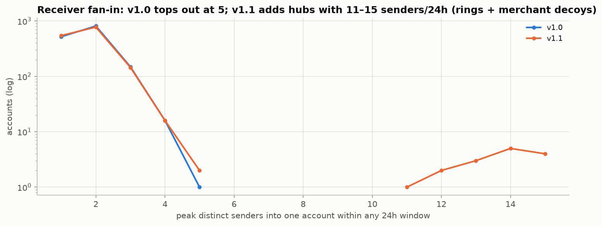
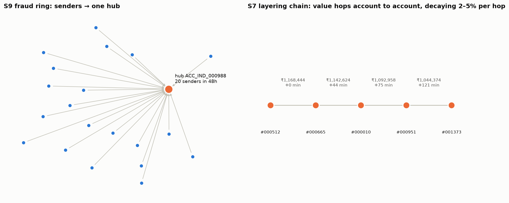
The transactions form a directed, weighted graph of accounts. Two families of features were built:
Each uses only transactions strictly before the current one, which is what a live system would know at scoring time. This removes look-ahead leakage and is tested in code.
| Feature | Meaning |
|---|---|
| sender_tx_10m / _1h / _24h | Number of payments the sender made in the last 10 min / 1 h / 24 h (bursts, structuring) |
| sender_distinct_receivers_24h | Distinct payees of the sender in 24 h |
| receiver_tx_in_24h · receiver_distinct_senders_24h / _7d | Fan-in into the receiver (fraud-ring hubs) |
| sec_since_sender_last_inflow | Seconds since the sender last received money (mules, layering) |
| forward_ratio | Amount sent ÷ amount last received |
| is_pass_through | ≥ 80% of the last inflow forwarded within 30 minutes |
| chain_depth | Number of consecutive pass-through hops leading to this payment |
| device_distinct_accounts · ip_distinct_accounts | Distinct accounts seen on this device / IP so far (shared devices) |
PageRank of sender and receiver, Louvain community size of both, same-community flag, and receiver clustering coefficient. They're label-free but computed on the whole graph, which is documented as a transductive assumption (D-012).
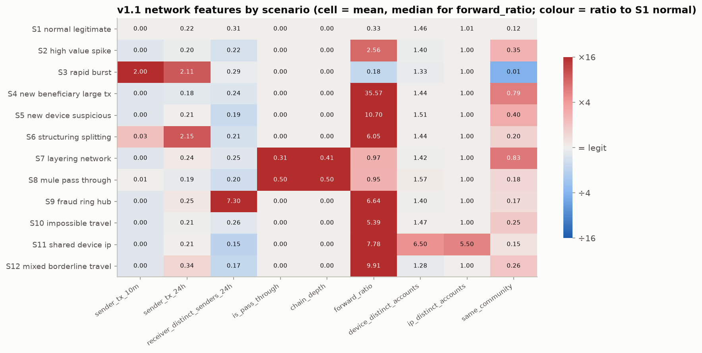
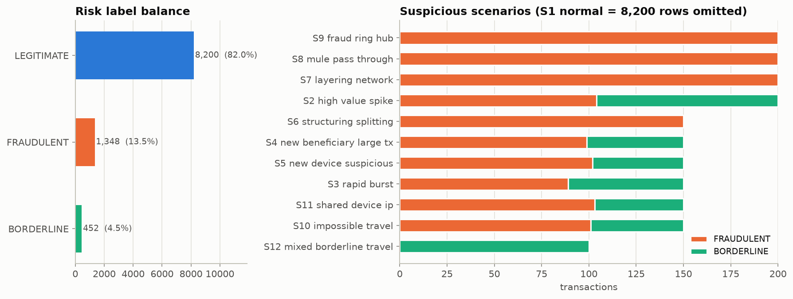
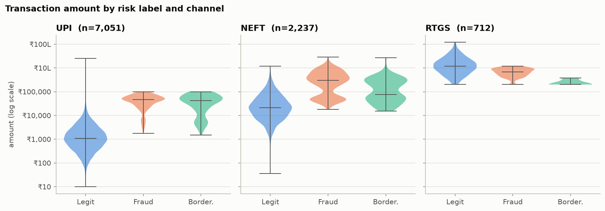
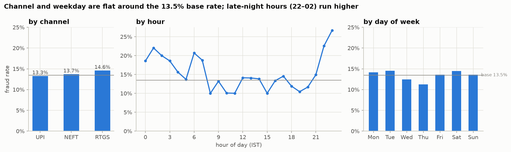
| Flag | Support | Fraud rate | flag | Lift | % of LEGIT | % of FRAUD | % of BORDER |
|---|---|---|---|---|---|---|
| NEW_DEVICE | 22.2% | 32.1% | 2.38 | 15.3% | 52.7% | 56.2% |
| NEW_BENEFICIARY | 24.4% | 26.8% | 1.99 | 19.6% | 48.5% | 39.8% |
| RECENT_BENEFICIARY (<24h) | 9.1% | 76.2% | 5.65 | 0.0% | 51.2% | 47.8% |
| FAR_FROM_HOME (>100km) | 5.8% | 65.7% | 4.88 | 0.0% | 28.0% | 43.6% |
| HIGH_AMOUNT_SPIKE (>5×) | 26.8% | 33.2% | 2.46 | 18.3% | 66.1% | 64.6% |
| HIGH_VALUE (≥₹50k) | 19.2% | 35.0% | 2.60 | 12.7% | 49.9% | 47.1% |
| NEAR_THRESHOLD (₹45–50k) | 3.2% | 72.9% | 5.41 | 0.7% | 17.1% | 6.2% |
| ODD_HOUR (<6 or >22) | 11.0% | 19.5% | 1.45 | 10.2% | 16.0% | 11.5% |
| PASS_THROUGH | 1.6% | 99.4% | 7.37 | 0.0% | 12.0% | 0.0% |
| SHARED_DEVICE (≥3 accts) | 8.6% | 19.8% | 1.47 | 7.6% | 12.6% | 13.9% |
Two flags never fire on legitimate rows (generator artifact). PASS_THROUGH is the most precise signal (99% fraud) but covers only 1.6% of rows: a classic high-precision, low-recall mule indicator.
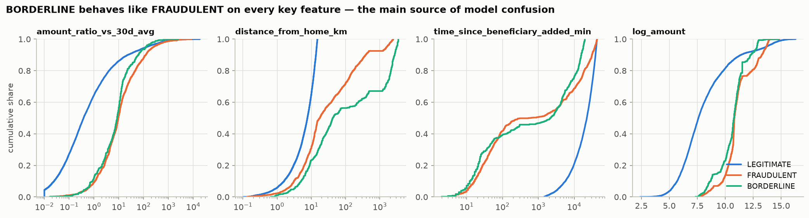
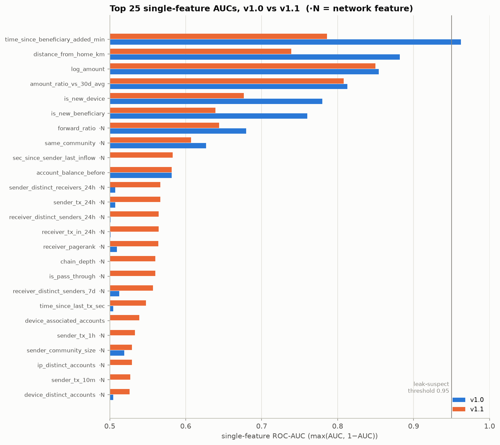
| # | Feature | Group | Single-feature AUC | Mutual information |
|---|---|---|---|---|
| 1 | log_amount | A transaction | 0.850 | 0.1629 |
| 2 | amount_ratio_vs_30d_avg | B behavioural | 0.808 | 0.0886 |
| 3 | time_since_beneficiary_added_min | B behavioural | 0.786 | 0.1082 |
| 4 | distance_from_home_km | B behavioural | 0.739 | 0.1061 |
| 5 | is_new_device | B behavioural | 0.677 | 0.0343 |
| 6 | forward_ratio | C network | 0.644 | 0.0680 |
| 7 | is_new_beneficiary | B behavioural | 0.639 | 0.0187 |
| 8 | same_community | C network | 0.607 | 0.0222 |
| 9 | sec_since_sender_last_inflow | C network | 0.583 | 0.0405 |
| 10 | account_balance_before | A transaction | 0.582 | 0.0159 |
| 11 | sender_distinct_receivers_24h | C network | 0.566 | 0.0114 |
| 12 | sender_tx_24h | C network | 0.566 | 0.0195 |
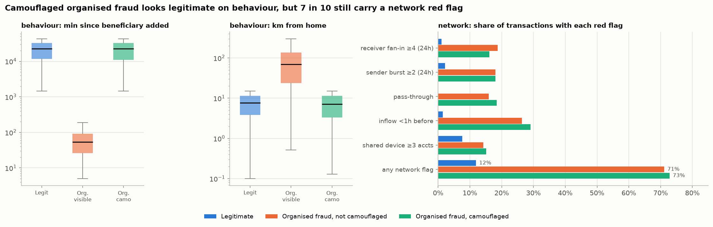
Other EDA figures in the repository: correlation matrix (amount vs amount ratio ρ = 0.85, so Naive Bayes' independence assumption is violated), geography (states 11–16.5%, no hotspot), daily volume (no trend, which supports the temporal hold-out), and scenario fingerprints.
Each transaction becomes a basket of boolean items (20 feature items + 2 label items). For example, a transaction might be {CH_UPI, HIGH_AMOUNT_SPIKE, NEW_DEVICE, RECENT_BENEFICIARY, QUICK_INFLOW, FRAUDULENT}. Label items may appear only as a rule's consequent.
| Item | Definition | Count | Support | Fraud rate |
|---|---|---|---|---|
| HIGH_AMOUNT_SPIKE | amount_ratio_vs_30d_avg > 5 | 2,683 | 26.8% | 33.2% |
| MODERATE_AMOUNT_SPIKE | 2 < amount_ratio_vs_30d_avg <= 5 | 1,012 | 10.1% | 22.2% |
| HIGH_VALUE | amount_inr >= 50000 | 1,923 | 19.2% | 35.0% |
| NEAR_THRESHOLD | 45000 <= amount_inr < 50000 | 317 | 3.2% | 72.9% |
| NEW_DEVICE | is_new_device == 1 | 2,218 | 22.2% | 32.1% |
| NEW_BENEFICIARY | is_new_beneficiary == 1 | 2,444 | 24.4% | 26.8% |
| RECENT_BENEFICIARY | time_since_beneficiary_added_min < 1440 | 906 | 9.1% | 76.2% |
| FAR_FROM_HOME | distance_from_home_km > 100 | 575 | 5.8% | 65.7% |
| EXTREME_LOCATION | distance_from_home_km > 500 | 250 | 2.5% | 40.4% |
| ODD_HOUR | hour_of_day < 6 or hour_of_day > 22 | 1,101 | 11.0% | 19.5% |
| CH_UPI | channel == 'UPI' | 7,051 | 70.5% | 13.3% |
| CH_NEFT | channel == 'NEFT' | 2,237 | 22.4% | 13.7% |
| CH_RTGS | channel == 'RTGS' | 712 | 7.1% | 14.6% |
| PEP_CUSTOMER | sender_pep_flag == 1 | 98 | 1.0% | 8.2% |
| KYC_NOT_VERIFIED | sender_kyc_status != 'VERIFIED' | 774 | 7.7% | 14.2% |
| PASS_THROUGH | is_pass_through == 1 | 163 | 1.6% | 99.4% |
| QUICK_INFLOW | sec_since_sender_last_inflow < 3600 | 392 | 3.9% | 67.6% |
| HUB_RECEIVER | receiver_distinct_senders_24h >= 4 | 254 | 2.5% | 65.0% |
| BURST_SENDER | sender_tx_24h >= 2 | 397 | 4.0% | 44.1% |
| SHARED_DEVICE | device_distinct_accounts >= 3 | 858 | 8.6% | 19.8% |
| FRAUDULENT | risk_label == FRAUDULENT | 1,348 | 13.5% | 100.0% |
| BORDERLINE | risk_label == BORDERLINE | 452 | 4.5% | 0.0% |
| Concept | Definition |
|---|---|
| Apriori | Level-wise candidate generation: every frequent k-itemset is joined to make (k+1)-candidates, which are counted against all transactions. Simple, but candidates grow exponentially. |
| FP-Growth | Compresses transactions into a prefix tree (FP-tree) and mines it recursively without generating candidates. |
| FP-Max | FP-Growth variant returning only maximal itemsets (no frequent superset). Lossy but very compact. |
| Closed itemsets | No superset with the same support. A lossless compression of all frequent itemsets. |
| Support | P(X ∪ Y): the share of transactions containing the whole rule |
| Confidence | P(Y | X): how often the rule is right when the antecedent appears |
| Lift | confidence ÷ P(Y): how many times more likely fraud is given X (1 = independent) |
| Leverage / conviction | P(X∪Y) − P(X)P(Y); and (1 − P(Y)) / (1 − confidence) |
| Productive rule | A rule kept only if its confidence beats every simpler sub-rule by ≥ 0.01 (Bayardo's improvement), which removes redundant variants |
| Emerging pattern | Itemset whose support grows strongly from non-fraud to fraud (growth rate); 'jumping' when absent from non-fraud |
Protocol: two item universes (22 core items; 49 items adding city, device, hour band, account and customer type), five support levels, three algorithms. Runtime is the median of 3 untraced runs; memory comes from a separate traced run (D-017). The code asserts that Apriori and FP-Growth return identical itemsets and supports at every level.
| Item universe | min_support | Algorithm | Itemsets | Runtime s | Peak MB |
|---|---|---|---|---|---|
| core (22) | 0.01 | Apriori | 534 | 0.014 | 15.1 |
| core (22) | 0.01 | FP-Growth | 534 | 0.036 | 1.1 |
| core (22) | 0.01 | FP-Max | 96 | 0.035 | 0.8 |
| core (22) | 0.002 | Apriori | 2,840 | 0.058 | 60.8 |
| core (22) | 0.002 | FP-Growth | 2,840 | 0.055 | 3.6 |
| core (22) | 0.002 | FP-Max | 221 | 0.053 | 1.3 |
| extended (49) | 0.01 | Apriori | 6,244 | 0.154 | 155.9 |
| extended (49) | 0.01 | FP-Growth | 6,244 | 0.199 | 11.8 |
| extended (49) | 0.01 | FP-Max | 1,011 | 0.272 | 8.8 |
| extended (49) | 0.002 | Apriori | 56,278 | 2.609 | 1,317.0 |
| extended (49) | 0.002 | FP-Growth | 56,278 | 0.963 | 78.5 |
| extended (49) | 0.002 | FP-Max | 5,542 | 2.461 | 19.3 |
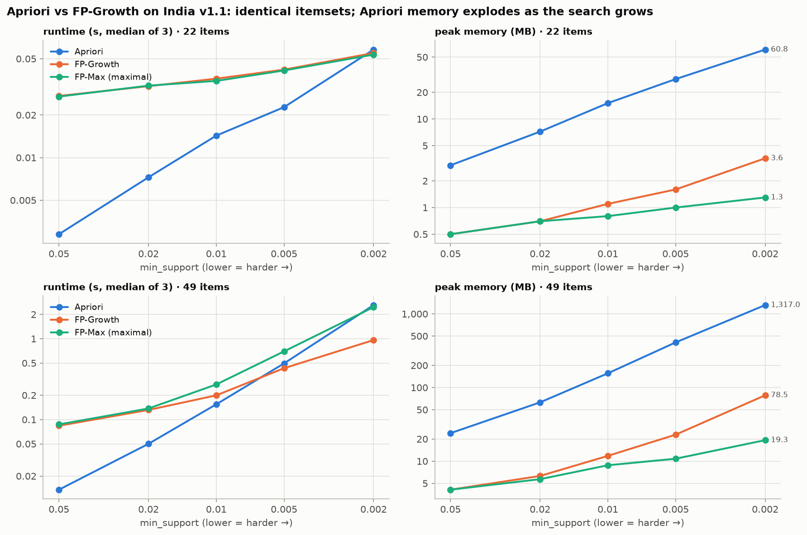
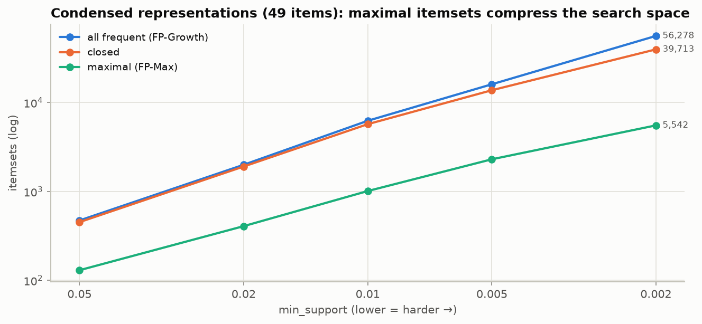
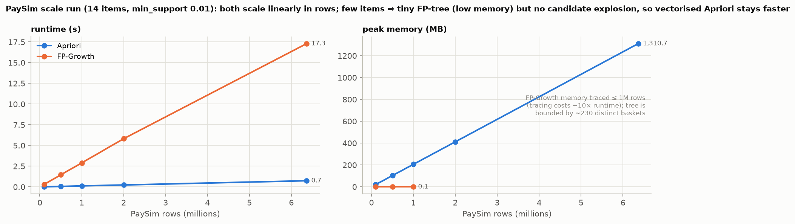
Funnel: 534 frequent itemsets → 168 target rules (confidence ≥ 0.5) → 152 pass Lift > 1.5 and Confidence > 0.6 → 49 productive rules (16 contain network items). The only BORDERLINE rule: {EXTREME_LOCATION, NEW_DEVICE} → BORDERLINE (confidence 60%, lift 13.4).
| Antecedent (→ FRAUDULENT) | Support | Confidence | Lift | Network item |
|---|---|---|---|---|
| {CH_UPI, HIGH_AMOUNT_SPIKE, HUB_RECEIVER} | 1.1% | 100% | 7.42 | yes |
| {PASS_THROUGH} | 1.6% | 99% | 7.37 | yes |
| {HIGH_AMOUNT_SPIKE, QUICK_INFLOW, RECENT_BENEFICIARY} | 1.0% | 97% | 7.20 | yes |
| {HIGH_VALUE, NEW_BENEFICIARY, QUICK_INFLOW} | 1.0% | 96% | 7.13 | yes |
| {HIGH_AMOUNT_SPIKE, NEW_DEVICE, QUICK_INFLOW} | 1.1% | 96% | 7.10 | yes |
| {QUICK_INFLOW, RECENT_BENEFICIARY} | 1.3% | 95% | 7.08 | yes |
| {HIGH_AMOUNT_SPIKE, NEW_BENEFICIARY, QUICK_INFLOW} | 1.1% | 95% | 7.02 | yes |
| {NEW_BENEFICIARY, NEW_DEVICE, QUICK_INFLOW} | 1.0% | 93% | 6.89 | yes |
| {HIGH_VALUE, QUICK_INFLOW} | 1.9% | 91% | 6.78 | yes |
| {NEAR_THRESHOLD, RECENT_BENEFICIARY} | 1.1% | 90% | 6.67 |
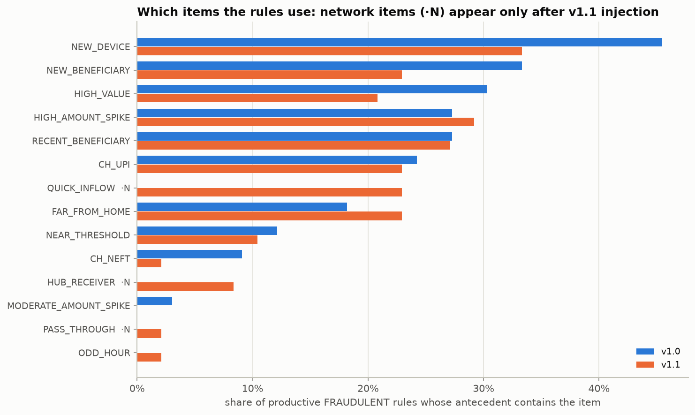
138 minimal emerging patterns (≥ 5% of fraud, growth ≥ 3). The strongest are jumping patterns, present in fraud and never in non-fraud:
| Pattern | Support in fraud | Support in non-fraud |
|---|---|---|
| {HIGH_AMOUNT_SPIKE, PASS_THROUGH} | 8.3% | 0.0% |
| {CH_UPI, HIGH_AMOUNT_SPIKE, HUB_RECEIVER} | 8.3% | 0.0% |
| {HIGH_VALUE, PASS_THROUGH} | 7.3% | 0.0% |
| {CH_UPI, HIGH_VALUE, HUB_RECEIVER} | 7.2% | 0.0% |
| {HUB_RECEIVER, RECENT_BENEFICIARY} | 6.5% | 0.0% |
| {NEW_DEVICE, PASS_THROUGH} | 6.4% | 0.0% |
Flagging a transaction when any rule fires gives, in-sample, a best F1 of 0.76 with the top 39 rules. 426 of the 886 false positives are BORDERLINE. The fair, held-out comparison with ML (rules mined on the training split only) is in Chapter 11: F1 0.748, PR-AUC 0.779.
PaySim: on 6.36M rows (fraud rate 0.13%, min_support 0.0005) the top rule is {ORIG_FULL_AMOUNT} → fraud (confidence 99%, lift 767). This is a known simulator artifact (PaySim fraud always empties the account) and is reported as such.
| Item | Choice |
|---|---|
| Feature sets | A = transaction (12 columns: amount, channel, time, balance, account history) · B = A + behavioural (30: device, beneficiary, distance, amount ratio, velocity, KYC/PEP) · C = B + network (49: Ch. 8) |
| Datasets | v1.1 (primary) and v1.0 (control without network structure) |
| Models | Decision Tree (depth 8), Gaussian Naive Bayes, KNN (k = 15, distance-weighted), Random Forest (300 trees), XGBoost (300 trees, depth 6), MLP (64-32, early stopping). Default hyperparameters; tuning is Phase 7. |
| Pre-processing | trees: raw numerics + one-hot categoricals; KNN/MLP/NB: signed-log + standardisation (heavy-tailed amounts and durations) |
| Split | stratified on risk_label: train 6,000 / validation 2,000 / test 2,000 |
| Comparison | 5×2 repeated stratified cross-validation on the 80% development set with identical folds for every configuration, giving paired t-tests and Wilcoxon tests (D-021) |
| Imbalance | SMOTE inside the imblearn pipeline (re-fit per fold, so no leakage); compared with class weighting and none |
| Threshold | maximum-F1 threshold chosen on validation, never on test; the test set is scored once per configuration |
| Metrics | PR-AUC (primary, since the class balance is 13.5%), ROC-AUC, F1, precision, recall, per-scenario recall, BORDERLINE flag rate |
| Robustness | temporal hold-out: train 1–19 Aug (6,400), validate 20–23 (1,323), test 24–30 (2,277) |
In total: 360 cross-validation fits + 36 hold-out fits for the main grid, plus imbalance, temporal, rule-baseline and 3-class experiments (~6 minutes on 8 cores).
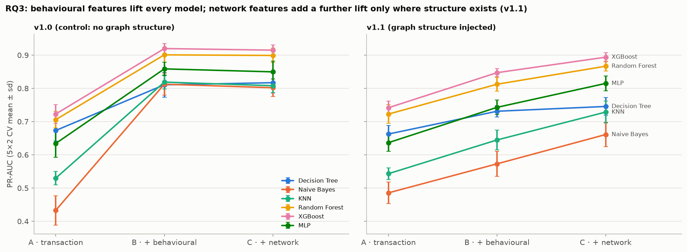
Paired significance (mean PR-AUC difference across 10 identical folds; ✔ = significantly better, p < 0.05):
| Model | v1.0 B−A | v1.0 C−B | v1.1 B−A | v1.1 C−B |
|---|---|---|---|---|
| Decision Tree | +0.138 (p=1.5e-06) ✔ | +0.006 (p=0.449) | +0.069 (p=1.96e-05) ✔ | +0.014 (p=0.194) |
| Naive Bayes | +0.380 (p=2.76e-09) ✔ | -0.011 (p=0.0976) | +0.087 (p=0.000961) ✔ | +0.088 (p=1.73e-07) ✔ |
| KNN | +0.289 (p=6.8e-11) ✔ | -0.011 (p=0.222) | +0.102 (p=2.19e-06) ✔ | +0.084 (p=3.92e-06) ✔ |
| Random Forest | +0.195 (p=2.33e-11) ✔ | -0.002 (p=0.284) | +0.090 (p=6.38e-08) ✔ | +0.054 (p=8.9e-08) ✔ |
| XGBoost | +0.197 (p=1.11e-10) ✔ | -0.005 (p=0.0539) | +0.106 (p=5.61e-07) ✔ | +0.047 (p=1.23e-06) ✔ |
| MLP | +0.224 (p=7.25e-08) ✔ | -0.009 (p=0.438) | +0.106 (p=1.1e-05) ✔ | +0.072 (p=3.7e-05) ✔ |
Answer: behavioural context is the largest gain (B > A for 12/12 model-dataset pairs, p < 0.001). Network features give a further, significant gain on v1.1 (5/6 models, +0.05 to +0.09) and none on v1.0. Network features help exactly where network structure exists.
| Model | PR-AUC A | PR-AUC B | PR-AUC C | ROC-AUC C | F1 C | Precision C | Recall C |
|---|---|---|---|---|---|---|---|
| Decision Tree | 0.606 | 0.671 | 0.690 | 0.946 | 0.787 | 0.693 | 0.911 |
| Naive Bayes | 0.421 | 0.550 | 0.642 | 0.904 | 0.663 | 0.594 | 0.752 |
| KNN | 0.507 | 0.655 | 0.709 | 0.935 | 0.707 | 0.654 | 0.770 |
| Random Forest | 0.650 | 0.766 | 0.838 | 0.976 | 0.799 | 0.750 | 0.856 |
| XGBoost | 0.690 | 0.829 | 0.875 | 0.980 | 0.801 | 0.698 | 0.941 |
| MLP | 0.551 | 0.681 | 0.798 | 0.962 | 0.734 | 0.717 | 0.752 |
Cross-validation ranks the models identically (table in the appendix), so the ranking is not test-set luck. Tree ensembles win because they capture interactions (large amount × recent payee × quick inflow). Naive Bayes is hurt by correlated features (amount vs amount ratio, ρ = 0.85). Naive Bayes and KNN gain the most from network features (+0.09, +0.08), because those features place camouflaged fraud near other fraud.
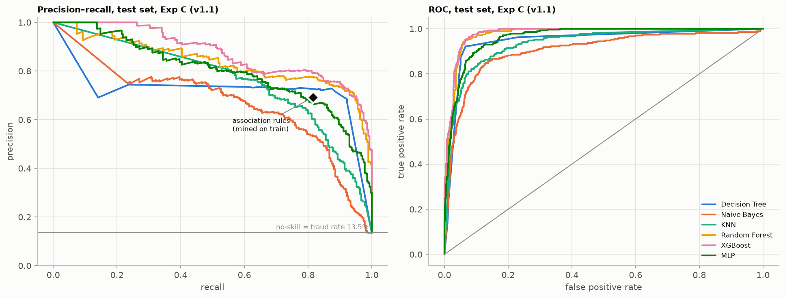
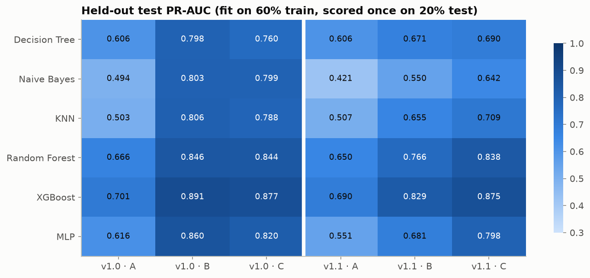
| Model | None | Class weight | SMOTE |
|---|---|---|---|
| Decision Tree | 0.795 | 0.802 | 0.745 |
| Naive Bayes | 0.667 | — | 0.661 |
| KNN | 0.790 | — | 0.729 |
| Random Forest | 0.897 | 0.880 | 0.867 |
| XGBoost | 0.899 | 0.902 | 0.894 |
| MLP | 0.856 | — | 0.815 |
SMOTE never improved PR-AUC and was clearly worse for the decision tree, KNN and MLP. Thresholds are tuned anyway, and SMOTE interpolates across one-hot categories and across different fraud scenarios, creating unrealistic synthetic fraud. Phase 7 therefore uses class weights for trees and no resampling elsewhere (D-020). This negative result is worth stating in the ML report.
| Scenario | n (test) | Recall A | Recall B | Recall C |
|---|---|---|---|---|
| S2 high value spike | 20 | 50% | 75% | 80% |
| S3 rapid burst | 18 | 28% | 83% | 89% |
| S4 new beneficiary large tx | 19 | 63% | 95% | 95% |
| S5 new device suspicious | 24 | 96% | 100% | 100% |
| S6 structuring splitting | 23 | 100% | 100% | 96% |
| S7 layering network | 48 | 67% | 65% | 85% |
| S8 mule pass through | 40 | 90% | 90% | 98% |
| S9 fraud ring hub | 41 | 100% | 98% | 100% |
| S10 impossible travel | 16 | 88% | 100% | 100% |
| S11 shared device ip | 21 | 100% | 95% | 100% |
Network features fix the camouflaged network scenarios (S7 layering 65% → 85%, S8 mule 90% → 97.5%, S3 burst 83% → 89%). The hardest scenario overall is S2 high-value spike (80%): its only signal is the amount, and legitimate RTGS payments are large too. Test counts per scenario are small (16–48), so differences under ~10 points are noise.
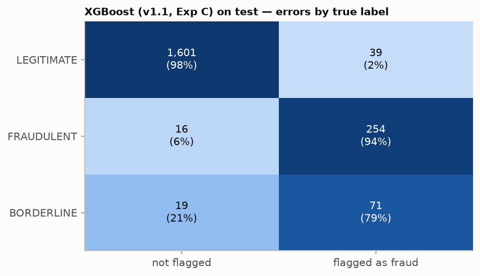
3-class extension (XGBoost, class-balanced): F1 LEGITIMATE 0.99, FRAUDULENT 0.82, BORDERLINE 0.56 (macro 0.79). Borderline cases are only half-separable, so the risk score will treat them as a "review" tier.
| Model | Exp | Stratified split | Temporal split |
|---|---|---|---|
| Random Forest | A | 0.650 | 0.675 |
| Random Forest | B | 0.766 | 0.799 |
| Random Forest | C | 0.838 | 0.855 |
| XGBoost | A | 0.690 | 0.663 |
| XGBoost | B | 0.829 | 0.829 |
| XGBoost | C | 0.875 | 0.876 |
Training on early August and testing on the last week gives the same results, so there is no drift within the month.
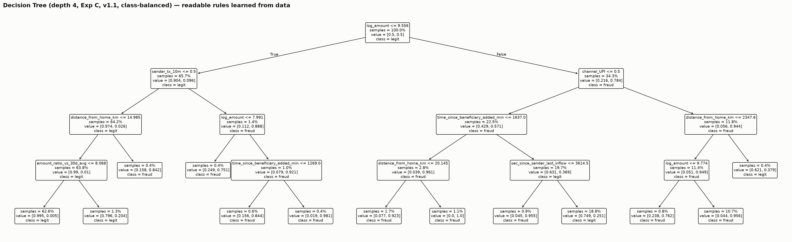
| Detector | PR-AUC | F1 | Precision | Recall |
|---|---|---|---|---|
| Association rules (train-mined, k = 36 chosen on validation) | 0.779 | 0.748 | 0.692 | 0.815 |
| XGBoost, Exp A (transaction only) | 0.690 | 0.677 | 0.585 | 0.804 |
| XGBoost, Exp C (all features) | 0.875 | 0.801 | 0.698 | 0.941 |
These phases are fully designed but not yet implemented. Their numbers will be added to this report when they're done. The designs below are what the team should describe as "proposed / in progress" if the reports are due earlier.
pred_contribs) avoids the heavy shap library on a 512 MB server.| Endpoint | Returns |
|---|---|
| POST /score-transaction | risk 0–100, tier, component scores, top feature contributions, cluster, fired rules, sanctions |
| POST /anomaly-score | Isolation Forest / OC-SVM / autoencoder scores |
| GET /patterns, /patterns/benchmark | association rules (filterable) and the Apriori vs FP-Growth results |
| GET /cluster/{{tx_id}} · /network/{{account_id}} · /transactions/{{tx_id}} | cluster profile · network metrics + ego graph · full merged profile |
| GET /sanctions-check?name= | fuzzy matches with scores |
| GET /models/compare | the A/B/C × model results matrix |
| GET /health, /metrics | status and latency/request statistics |
All services are stateless FastAPI apps with Pydantic schemas and auto-generated OpenAPI docs, in slim, non-root Docker images. Target: p95 < 200 ms for scoring when warm.
Nine pages calling only the gateway: Executive overview · Data quality · Transaction explorer · Pattern mining lab · ML experiments lab · Clustering & anomaly · Network explorer · Risk scorer (submit a transaction, see score, tier, explanation, rules, sanctions) · Platform (service health, latency, cold-start measurements).
| Component | Platform | Reason |
|---|---|---|
| React dashboard (static) | Vercel (Hobby, free) | Global CDN, Git-push deploys, preview URL per pull request. Streamlit can't run on Vercel, hence React. |
| FastAPI services (Docker) | Render web services (free) | Native Docker builds from GitHub, managed HTTPS, Blueprint IaC (render.yaml) |
| Model artifacts (~26 MB) | GitHub Releases | Versioned 'model registry'; downloaded during docker build into an immutable image |
| Training pipeline | Local / Compose | Needs the 1.8 GB dataset (not in Git); publishes artifacts to a release |
| CI | GitHub Actions | Tests on every push; Render and Vercel auto-deploy from main |
| Constraint | Design response |
|---|---|
| Render free web services can't receive private-network traffic | Inter-service calls use HTTPS + a shared secret header (X-Internal-Key) |
| Services sleep after 15 min idle; waking takes up to ~1 min | Dashboard shows a 'waking the backend' state and polls /health; cold vs warm latency measured as a CCT result |
| 750 free instance-hours per workspace per month | Sleeping services use no hours, so the demo fits |
| ~512 MB RAM per free instance | Memory-aware model choice; native TreeSHAP; target < 450 MB |
| Vercel proxy (rewrite) timeout is 30 s | The SPA calls Render directly with a CORS allow-list, not through a rewrite |
Two service modes from one codebase (FINSIGHT_SERVICE_MODE): remote runs five services talking over HTTP (Docker Compose locally, and an optional five-service Render Blueprint), which is the microservices demonstration. inprocess runs the gateway with the four modules imported directly, giving one Render service and one cold start (the default free deployment). Measuring both answers part of RQ8: the latency and cold-start cost of microservices versus a modular monolith.
| Topic | Where in FinSight | Status |
|---|---|---|
| KDD process | 7 labelled steps (Ch. 4) | ✔ |
| Data acquisition from heterogeneous sources | CSV, headerless CSV, XML, 6.36M-row CSV | ✔ |
| Data profiling and quality | DQ report: completeness, duplicates, RI, redundancy, leakage scan | ✔ |
| Data cleaning | types, sentinels, redundancy, name normalisation | ✔ |
| Data integration | 7-file merge with validated joins; OFAC + UN unification | ✔ |
| Data transformation / feature construction | v1.1 injection, point-in-time graph features, discretisation | ✔ |
| Data reduction / feature subset selection | Exp A/B/C ablation; redundant column removal | ✔ |
| Similarity measures | fuzzy string similarity (RapidFuzz); KNN distances | ✔ |
| Frequent itemsets, Apriori, FP-Growth | benchmark on two item universes + PaySim | ✔ |
| Closed and maximal itemsets | closed filter; FP-Max | ✔ |
| Association rules and interestingness | support, confidence, lift, leverage, conviction; productive rules; emerging patterns | ✔ |
| Classification and evaluation | DT, NB, KNN with PR-AUC, F1, ROC | ✔ |
| IEEE-CIS missingness profiling | transaction ⋈ identity | planned |
| Topic | Where in FinSight | Status |
|---|---|---|
| Supervised learning | 6 classifiers × 3 feature sets × 2 datasets | ✔ |
| Feature engineering | behavioural + point-in-time network features | ✔ |
| Train / validation / test, cross-validation | stratified 60/20/20; 5×2 repeated CV; temporal hold-out | ✔ |
| Statistical model comparison | paired t-test + Wilcoxon on identical folds | ✔ |
| Class imbalance | SMOTE vs class weights vs none | ✔ |
| Ensembles (bagging, boosting) | Random Forest, XGBoost | ✔ |
| Neural network classifier | MLP | ✔ |
| Evaluation metrics | PR-AUC, ROC-AUC, F1, precision/recall, per-class, confusion | ✔ |
| Interpretability | decision tree visualisation | ✔ |
| Unsupervised learning | K-Means, DBSCAN, PCA, t-SNE | planned (6) |
| Anomaly detection | Isolation Forest, One-class SVM, autoencoder | planned (6) |
| Hyperparameter tuning, bias–variance | Grid/Random search, learning curves | planned (7) |
| Stacking and calibration | RF + XGB + MLP → LR; isotonic | planned (7) |
| Explainability | SHAP global + local | planned (7) |
| Model persistence / serving | joblib (done), ONNX (planned) | partial |
| Topic | Where in FinSight | Status |
|---|---|---|
| Service models (IaaS / PaaS / SaaS / FaaS) | Render = container PaaS; Vercel = frontend PaaS + CDN; FinSight API as SaaS | designed |
| Virtualisation and containers | Dockerfile per service; VM vs container comparison | planned (8) |
| Microservices and API gateway | 5 FastAPI services; inprocess vs remote modes | planned (8) |
| REST and OpenAPI | 11 endpoints, Pydantic schemas, Swagger UI | planned (8) |
| Orchestration | Docker Compose (+ horizontal scaling demo); conceptual Kubernetes | planned (8) |
| CDN / edge | static SPA served from Vercel's edge network | planned (9–10) |
| CI/CD, GitOps | GitHub Actions tests; auto-deploy on push; preview deployments | planned (10) |
| Infrastructure as Code | render.yaml Blueprint, vercel.json, docker-compose.yml | planned (10) |
| Artifact registry / storage | GitHub Releases model registry; fsspec storage abstraction | planned (8) |
| Elasticity, scale-to-zero, cost | Render spin-down vs cold start; locust load test | planned (10) |
| Security | HTTPS, CORS allow-list, internal shared key, non-root images, env secrets | planned (8–10) |
| Observability | JSON logs, request IDs, /metrics, Platform page | planned (8–9) |
| Cloud-native principles | 12-factor configuration, stateless services, immutable images | designed |
Complete phases 6–10. Beyond the course: graph neural networks over the account graph; streaming scoring (Kafka) with online graph updates; drift monitoring; human-in-the-loop review of BORDERLINE cases; evaluation on real, consented bank data.
Each outline lists sections or slides with the source chapter and the figure file (in reports/figures/) to use. Keep the colour meaning consistent: blue = legitimate, orange = fraudulent, aqua = borderline.
Report outline: Introduction (Ch. 2) → Datasets and KDD (Ch. 3–4) → Audit and data quality (Ch. 5–6) → Dataset engineering v1.1 (Ch. 7) → EDA and RQ1 (Ch. 9) → Association mining and RQ2 (Ch. 10) → Rules vs classifiers (Ch. 11 baselines) → Conclusions (Ch. 14).
| Slide | Content | Figure / source |
|---|---|---|
| 1 | Title + one-line pitch | — |
| 2 | Problem: opportunistic vs organised fraud in Indian payments | — |
| 3 | Datasets and the KDD process | KDD flow (Ch. 4) |
| 4 | Audit: leakage and the missing network | Ch. 5 table |
| 5 | Data quality and integration (7 files → 76 columns) | Ch. 6 flow + RI table |
| 6 | Sanctions wrangling + threshold experiment | Ch. 6 sweep table |
| 7 | v1.1: injecting structure honestly | eda_12_network_examples, eda_11_fanin_distribution |
| 8 | EDA highlights and RQ1 | eda_02_amount_by_label, eda_07_behaviour_flags, eda_06_feature_auc_v10_v11 |
| 9 | Discretisation into items | Ch. 10 items table |
| 10 | Apriori vs FP-Growth | mining_01_benchmark, mining_03_paysim_scaling |
| 11 | Closed/maximal itemsets | mining_02_condensed |
| 12 | Top rules (RQ2) | mining_05_top_rules_v1_1, mining_04_rules_scatter |
| 13 | Control: v1.0 vs v1.1 rules | mining_06_item_share_v10_v11 |
| 14 | Rules as a detector vs ML | mining_07_detector_curve, ml_03_pr_roc_expC |
| 15 | Conclusions and limitations | Ch. 14 |
One-line pitch: "FinSight AI follows the full KDD process across five heterogeneous sources; our audit found label leakage and fraud scenarios that were never encoded in the graph. We fixed and validated that with a seeded augmentation step, then mined behaviour patterns with Apriori and FP-Growth and benchmarked both."
Report outline: Introduction and RQs (Ch. 2) → Data and features (Ch. 3, 8, Appendix B) → Protocol (Ch. 11 design) → RQ3 → RQ4 + imbalance → RQ7 + BORDERLINE → robustness and interpretability → planned unsupervised, anomaly, tuning, stacking, SHAP (Ch. 12) → Conclusions.
| Slide | Content | Figure / source |
|---|---|---|
| 1 | Title + pitch | — |
| 2 | Task: binary fraud detection, 13.5% positives; why PR-AUC | eda_01_label_overview |
| 3 | Feature sets A/B/C (12/30/49) | Appendix B |
| 4 | Network features and point-in-time design | eda_14_network_signal_by_scenario |
| 5 | Protocol: split, 5×2 CV, paired tests, SMOTE in pipeline | Ch. 11 design table |
| 6 | RQ3 result | ml_01_abc_cv_pr_auc + significance table |
| 7 | RQ4 model comparison | ml_02_test_pr_auc_heatmap, ml_03_pr_roc_expC |
| 8 | Imbalance: SMOTE doesn't help | ml_05_imbalance |
| 9 | RQ7 per-scenario recall | ml_04_per_scenario_xgb |
| 10 | BORDERLINE problem + 3-class | ml_06_confusion_by_label, ml_08_borderline |
| 11 | Temporal robustness | ml_07_temporal |
| 12 | Interpretable tree | ml_09_decision_tree |
| 13 | Next: clustering, anomaly, tuning, stacking, SHAP | Ch. 12 |
| 14 | Conclusions | Ch. 14 |
One-line pitch: "We trained 6 classifiers across 3 feature sets on two dataset versions and used paired cross-validation to show that network features help only where real network structure exists. XGBoost reaches PR-AUC 0.88, and SMOTE didn't help."
Report outline: Introduction (Ch. 2) → Requirements and service models → Architecture (Ch. 12 Phase 8) → Containers and microservices → REST API design → Deployment on Vercel + Render, with constraints → CI/CD and IaC → Scalability, scale-to-zero and cost → Security and observability → Evaluation (cold start, latency, image size: to be measured in Phase 10) → Conclusions.
| Slide | Content | Figure / source |
|---|---|---|
| 1 | Title + pitch | — |
| 2 | What the platform does (ML + mining as a service) | Ch. 1 |
| 3 | Service models: where Render, Vercel and our API sit | Ch. 13 CCT table |
| 4 | Architecture: gateway + 4 services + SPA | Ch. 12 flow diagram |
| 5 | REST endpoints and OpenAPI | Ch. 12 endpoint table |
| 6 | Containers: Dockerfiles, slim/non-root images | Phase 8 |
| 7 | Deployment topology: Vercel CDN → Render containers | Ch. 12 deployment table |
| 8 | Free-tier constraints → design responses | Ch. 12 constraints table |
| 9 | Microservices vs modular monolith (two modes) | Ch. 12 |
| 10 | CI/CD, IaC, model registry | Ch. 12 |
| 11 | Scale-to-zero vs cold start; load test results | Phase 10 measurements |
| 12 | Security and observability | Ch. 13 |
| 13 | Live demo | Vercel URL |
| 14 | Conclusions | Ch. 14 |
One-line pitch: "Five stateless FastAPI microservices in Docker, deployed on Render from a Blueprint, with a React dashboard served from Vercel's CDN. Artifacts are versioned as GitHub Releases and baked into immutable images, deploys are triggered by Git pushes, and we measure the scale-to-zero vs cold-start trade-off."
| ID | Decision | Why / evidence |
|---|---|---|
| D-001 | Build dataset v1.1 with seeded graph-structure injection (rings, mules, layering, bursts, structuring, shared devices) + legitimate decoys. v1.0 kept as the control. | v1.0 network/velocity features had AUC 0.50–0.52; the scenarios were labelled but not wired into the graph. Exp C/RQ3 would have been empty. |
| D-002 | Camouflage 50% of FRAUDULENT rows in network scenarios (copy 4 behavioural columns from legit rows). | Without it, behavioural features caught ~99% of network fraud, so Exp C added nothing (PR-AUC 0.924 → 0.933). With 50%: B 0.842 → C 0.894 PR-AUC. Realistic: organised fraud looks normal per transaction. |
| D-003 | Exclude rapid_forward_delta_sec (v1.0), is_flagged_alert, alert_id as label proxies; recompute rapid-forward from real timestamps in v1.1. | v1.0 rapid_forward is non-zero only for S6/S7 (100% fraud); alert flags = FRAUD ∪ BORDERLINE exactly. |
| D-004 | Aggregate beneficiaries per sender (point-in-time) instead of a pair join. | Only 8 / 10,000 (sender, receiver) pairs exist in beneficiaries.csv. |
| D-005 | Drop transaction_type (≡ channel) and status (constant). | Audit: UPI=P2P, NEFT=C2B, RTGS=B2B; status always SUCCESS. |
| D-006 | Anomaly detectors train on India legit rows; PaySim is a separate big-data track; IEEE-CIS is the data-quality showcase. | PaySim/IEEE-CIS share no schema with India data, so cross-dataset training is impossible. |
| D-007 | Sanctions = screening service + rule override, not a model feature. | Synthetic Indian names give ~0 hits, so the feature would be constant. Threshold sweep: FPR 23% @70, 0.17% @90. |
| D-008 | Architecture: 5 services (gateway, ml, mining, graph, sanctions) + dashboard + pipeline batch job + MinIO/GCS. | ETL as a long-running server and a separate scoring hop add latency/cost without adding concepts. |
| D-009 | Cloud target: GCP Cloud Run + GCS (superseded by D-022). | User choice; serverless, scale-to-zero, free tier; Mumbai fits the India context. |
| D-010 | Autoencoder in PyTorch → ONNX → onnxruntime; CPU-only wheels for torch and xgboost. | Keras/TF adds ~2 GB to images; CUDA wheels add ~3 GB of downloads with little benefit here (see D-013). |
| D-011 | Velocity columns (tx_frequency_24h, time_since_last_tx_sec) in v1.1 = max/min(original, observed). | The originals describe whole-account activity (10K rows are a sample); they can only be tightened by observed rows, never loosened. |
| D-012 | Global graph metrics (PageRank, Louvain) are computed on the full graph and documented as transductive; velocity/pass-through features are strictly point-in-time. | Global metrics are label-free; point-in-time versions would need per-transaction graph snapshots for little gain. |
| D-013 | Keep CPU-only by default even though the laptop has an NVIDIA MX450 (2 GB VRAM, driver 580, CUDA 13). GPU is opt-in later only if a measured bottleneck appears (candidate: XGBoost on PaySim 6.36M rows). | India data is 10K rows: GPU launch overhead exceeds compute; sklearn models (RF, KNN, SVM, IF, K-Means, t-SNE) are CPU-only; the autoencoder is tiny; Cloud Run serving is CPU; CUDA wheels cost ~3 GB on a slow link; 2 GB VRAM limits batch sizes. |
| D-014 | Keep sender/receiver_account_type incl. MULE_SUSPECT as features. | Looks like an investigation outcome, but the audit shows it isn't a label proxy: fraud rate among MULE_SUSPECT senders is 11.3% in v1.0 (base 13.5%). It's prior bank intelligence available at transaction time. |
| D-015 | All report figures use finsight.viz: validated reference palette (LEGIT = blue, FRAUD = orange, BORDERLINE = aqua, fixed across figures; v1.0 = blue, v1.1 = orange), a single y-axis, legends + selective direct labels, medians for skewed features. | Palette passes the all-pairs CVD checks for the 3 slots; aqua is < 3:1 contrast, so legends/labels are mandatory. Consistent entity colours across 14+ figures. |
| D-016 | Keep PASS_THROUGH (≥80% forwarded within 30 min) as-is despite 99% precision. | It's a recognised AML mule indicator; support is only 1.6%, so it's a high-precision/low-recall signal, not a leak. Benign decoy forwards (10–180 min, 30–100%) rarely meet it. |
| D-017 | Benchmark protocol: runtime = median of 3 untraced runs; memory = a separate tracemalloc run. PaySim FP-Growth memory traced only ≤ 1M rows. | tracemalloc slowed mlxtend's pure-Python FP-Growth ~10× (230 s vs 19 s on PaySim). Kernel peak-RSS (VmHWM) was tried and rejected: it reports 0 MB for small runs because freed heap is reused. |
| D-018 | Report only productive rules (Bayardo improvement ≥ 0.01) and minimal emerging patterns; label items only as consequents. | Without pruning, 152 filtered rules are mostly supersets of stronger simpler rules; the top-10 would be near-duplicates. |
| D-019 | Benchmark adds a 49-item "extended" universe (city, device, hour band, account and customer type). | With 22 items there is no candidate explosion, so vectorised Apriori wins everywhere; the item-universe size is the variable that exposes Apriori's exponential memory. |
| D-020 | From Phase 7 on: imbalance via class_weight (DT/RF/XGB) or none (KNN/MLP/NB) plus a validation-tuned threshold; SMOTE kept only as the reported baseline. | 5×2 CV on v1.1 Exp C: SMOTE never improved PR-AUC (DT 0.745 vs 0.802 class_weight; KNN 0.729 vs 0.790 none; MLP 0.815 vs 0.856 none; RF/XGB within 1 sd). SMOTE interpolates across one-hot categoricals and across different fraud scenarios. |
| D-021 | Model comparison by 5×2 repeated stratified CV with identical folds (paired t-test + Wilcoxon); the test set is scored once per config; the threshold comes from validation. | A single split can't tell a +0.05 PR-AUC gain from noise (fold sd ≈ 0.01–0.04). Identical folds make the B-vs-C differences paired. |
| D-022 | Deployment target: Vercel (frontend) + Render (backend), replacing GCP Cloud Run + GCS (supersedes D-009). Dashboard becomes a React + Vite static SPA instead of Streamlit. | Team requirement. Streamlit needs a long-lived WebSocket server, which Vercel doesn't support. A static SPA is CDN-friendly and deploys on Vercel Hobby for free. FastAPI in Docker deploys natively on Render. |
| D-023 | Two service modes from one codebase: FINSIGHT_SERVICE_MODE=inprocess (one Render web service, default free deploy) and remote (5 services: Compose locally, Render "full" Blueprint). Service-to-service calls carry an X-Internal-Key shared secret; the SPA calls the gateway directly with a CORS allow-list. | Render free web services can't receive private-network traffic and spin down after 15 min (~1 min to wake); chaining 5 cold services makes the first request slow. Vercel's 30 s proxy timeout rules out rewrites to a sleeping backend. |
| D-024 | Model artifacts (~26 MB) are versioned as GitHub Release assets and downloaded during docker build; training stays local (needs the 1.8 GB dataset). Serve-time explanations use XGBoost pred_contribs (native TreeSHAP) instead of importing shap. | Render's free filesystem is ephemeral, and Render cron/background workers aren't free. Release assets give versioning + immutable images. The ~512 MB free RAM rules out heavy imports. |
| Set | Columns |
|---|---|
| A · transaction (12) | log_amount, hour_of_day, day_of_week, account_balance_before, sender_account_age_days, sender 30-day avg amount / tx count / avg balance, receiver_account_age_days, channel, sender_account_type, receiver_account_type |
| B · + behavioural (+18 = 30) | is_new_device, is_new_beneficiary, time_since_beneficiary_added_min, amount_ratio_vs_30d_avg, distance_from_home_km, tx_frequency_24h, time_since_last_tx_sec, device_is_registered, device_associated_accounts, device_age_days, sender_bene_count, sender_bene_added_7d, sender_bene_min_prior_tx, sender_pep_flag, sender_declared_annual_income_inr, device_type, sender_kyc_status, sender_customer_type |
| C · + network (+19 = 49) | 13 point-in-time (Ch. 8) + sender/receiver PageRank, sender/receiver community size, same_community, receiver_clustering |
| Never features | is_fraud, risk_label, scenario_id, alert_id, is_flagged_alert, rapid_forward_delta_sec (labels/proxies); all IDs, VPAs, IFSC, IP |
| Model | v1.0 A | v1.0 B | v1.0 C | v1.1 A | v1.1 B | v1.1 C |
|---|---|---|---|---|---|---|
| Decision Tree | 0.673 ± 0.032 | 0.811 ± 0.037 | 0.817 ± 0.031 | 0.662 ± 0.026 | 0.731 ± 0.017 | 0.745 ± 0.027 |
| Naive Bayes | 0.433 ± 0.044 | 0.812 ± 0.033 | 0.802 ± 0.026 | 0.485 ± 0.033 | 0.573 ± 0.038 | 0.661 ± 0.036 |
| KNN | 0.530 ± 0.020 | 0.819 ± 0.021 | 0.808 ± 0.021 | 0.543 ± 0.018 | 0.645 ± 0.030 | 0.729 ± 0.033 |
| Random Forest | 0.706 ± 0.025 | 0.901 ± 0.022 | 0.899 ± 0.022 | 0.723 ± 0.028 | 0.812 ± 0.021 | 0.867 ± 0.015 |
| XGBoost | 0.723 ± 0.028 | 0.920 ± 0.016 | 0.915 ± 0.016 | 0.742 ± 0.020 | 0.847 ± 0.012 | 0.894 ± 0.014 |
| MLP | 0.634 ± 0.041 | 0.859 ± 0.021 | 0.850 ± 0.032 | 0.637 ± 0.025 | 0.743 ± 0.021 | 0.815 ± 0.023 |
| Term | Meaning |
|---|---|
| UPI / NEFT / RTGS | Unified Payments Interface (instant, P2P) / National Electronic Funds Transfer (batch) / Real-Time Gross Settlement (high value, ≥ ₹2 lakh) |
| VPA / IFSC | Virtual payment address (e.g. name@bank) / bank branch code |
| Mule account | account used to receive and quickly pass on illicit funds |
| Layering | moving funds through a chain of accounts to hide their origin |
| Structuring | splitting a large amount into payments just under a reporting threshold |
| PEP | politically exposed person (higher-risk customer category) |
| KDD | Knowledge Discovery in Databases: selection → cleaning → integration → transformation → mining → evaluation → presentation |
| Point-in-time feature | a feature computed only from information available before the event (prevents look-ahead leakage) |
| Label leakage / proxy | a column that encodes the answer, giving unrealistically perfect models |
| PR-AUC | area under the precision–recall curve (average precision); the right primary metric for rare positives |
| ROC-AUC | area under the true-positive vs false-positive rate curve |
| F1 | harmonic mean of precision and recall |
| SMOTE | Synthetic Minority Over-sampling: creates synthetic positives by interpolating between neighbours |
| 5×2 repeated CV | 5-fold cross-validation repeated twice with different shuffles = 10 paired scores |
| Support / confidence / lift | see Ch. 10 |
| Transductive | computed using the whole dataset (here: label-free graph statistics) |
| Cold start | delay when a scaled-to-zero cloud service receives its first request |
| Blueprint (Render) | render.yaml file describing services as code |
| CDN | content delivery network: serves static files from servers close to the user |
| Task | Command / location |
|---|---|
| Install | uv sync --all-extras |
| Tests | make test (31 tests) |
| Full pipeline | make pipeline (stages: inject, wrangle, graph, sanctions, eda, mining, train_supervised) |
| One stage | make pipeline STAGES=mining |
| Notebooks | notebooks/02_eda, 03_association_mining, 04_supervised_ml (executed, 0 errors) |
| This report | uv run python docs/report/build_report.py |
| Output files | Phase |
|---|---|
| reports/data_quality_india_v1_{0,1}.json · sanctions_summary.json | Phase 1 |
| dataset/processed/custom_india_v1_1/ (+ injection_log.csv) | Phase 1b |
| reports/eda_summary.json · figures/eda_01…14 | Phase 2 |
| dataset/curated/master_features_v1_{0,1}.parquet · artifacts/graph/ | Phase 3 |
| reports/association_rules_*.csv · mining_benchmark.csv · mining_paysim_scaling.csv · emerging_patterns_v1_1.csv · mining_summary.json · figures/mining_01…08 | Phase 4 |
| reports/ml_experiment_results.csv · ml_cv_folds.csv · ml_paired_tests.csv · ml_imbalance.csv · ml_per_scenario.csv · ml_temporal.csv · ml_summary.json · figures/ml_01…09 · artifacts/models/phase5/ | Phase 5 |
Environment: Ubuntu, Python 3.12 (uv), seed 42, CPU only. The dataset (1.8 GB) is not stored in Git; place it under dataset/ as described in docs/DATA.md.